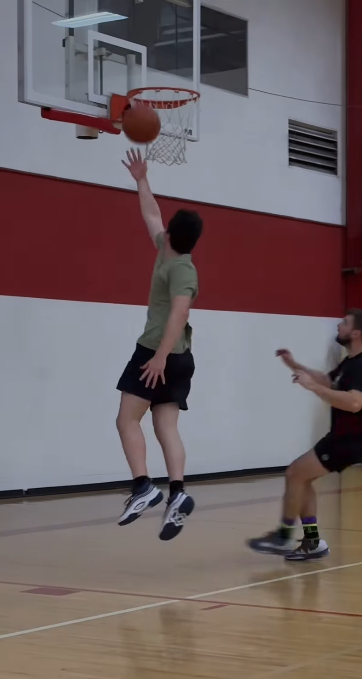
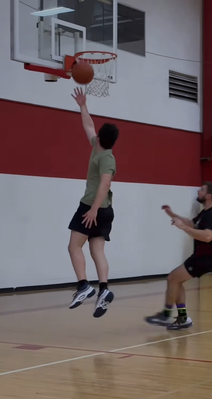

My Technical Journey
In “The Sky Blue Ball”, the blue ball is more than just a toy, it represents something deeper about the main character's childhood. As a kid, I always wanted to grow up and experience the freedoms that came with that; not having a bedtime, choosing what I wanted to study, driving cars. Joyce Carol Oates uses the ball to show how fragile and temporary childhood can be. Looking back on my own childhood, the simplicity of life back then seems so far. The ball in the story represents that innocence, and as the story goes on, it becomes a symbol of the character’s world changing, where she realizes that life doesn’t stay simple or innocent forever. Growing up means losing some of that innocence, and the blue ball is a reminder of that loss. Growing up is both cool and sad in a way. I think this story is about more than just playing with a ball, it is about how life can take unexpected turns and how we have to face those changes.
Career Goals
As the story progresses, the blue ball transforms from a symbol of joy to one of loss. The main character is attached to the ball because it represents a time in life when everything was simpler and carefree. The ball is something that the character can physically hold on to, but it also becomes a reminder that childhood can’t last forever. Oates uses the ball to illustrate the painful yet necessary transition from childhood to adulthood. Critics have noted how Oates often uses simple objects to represent larger emotional struggles in her characters’ lives. Marie Bouchet notes that “Oates’ work frequently incorporates everyday objects as markers of profound psychological and emotional shifts in her characters” (Marie Bouchet 65). This highlights how the blue ball in, “The Sky Blue Ball” symbolizes the protagonist’s emotional journey from innocence to maturity. The blue ball perfectly captures this, and embodies the protagonist's slow realization that life is more complicated than they thought
My Hobbies
In Joyce Carol Oates’ “The Sky Blue Ball”, the ball symbolizes the innocence and fragility of childhood, and through the protagonist's experiences, Oates shows how growing up is filled with loss and the realization that life is unpredictable and fleeting. However, while growing up is portrayed as difficult, the story suggests that it also brings both challenges and opportunities for personal growth.
 
